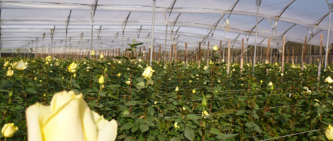
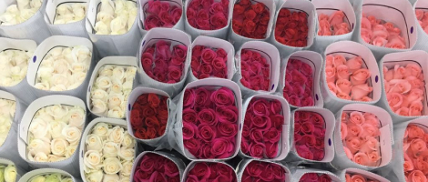
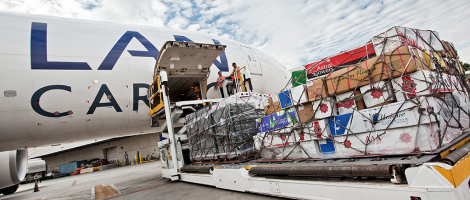
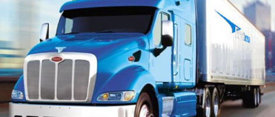

Идея создания универсального web-интерфейса, предназначенного для профессионалов цветочного бизнеса, родилась в начале 2000-х. На первоначальном этапе развития портала мы приняли решение создать пользовательскую оболочку для сегмента цветочного рынка, который объединяет южно-американских плантаторов, выращивающих цветочную продукцию в горной экваториальной зоне, и клиентов, которые регулярно заказывают эту продукцию. Логистика выполнения таких заказов далеко не тривиальна, поэтому разработка web-двигателя, регламентирующего взаимоотношения участников рынка, превратилась, по сути, в научную задачу.
 Ещё в конце 90-х заказы клиентов выглядели достаточно просто, к примеру — 20 «коробочек Эквадорчика», розы, 10 красной + 10 цветной. В настоящее время клиенты предъявляют всё более и более сложные требования к выполнению своих заказов. Помимо чёткого сортового состава груза с описанием возможных замен, покупатели настойчиво требуют учитывать их предпочтения по сортам от конкретных плантаций. Логистика выполнения таких заказов требует использования соответствующих программных инструментов, ведь невозможно всю информацию «держать в голове»
 Если рассматривать Голландские аукционы, где огромное количество производителей на часах выставляет свою продукцию, то там, в основном, всё упирается только в цену закупки и в умение закупщиков вовремя среагировать на флуктуации спроса. В нашем же секторе бизнеса многое зависит от погодных условий в местах выращивания, от своевременного бронирования мест на авиалиниях; даже забастовки индейцев на дорогах и частые извержения вулканов вносят свои коррективы в логистику. Мы не волшебники, но постарались заложить в web-двигатель, по крайней мере, все те особенности логистики, которые не являются форс-мажором, и которые можно предусматривать и прогнозировать.
 
В новостных лентах нашего портала мы планируем в первую очередь размещать информацию, которая будет полезной крупно-оптовым покупателям срезанных цветов. Возможно, это будут краткие обзоры состояния оптового рынка цветов, анализ текущего спроса, тенденции развития участников рынка.
Мы планируем постоянно держать пользователей в курсе новых разработок и модификаций web-двигателя нашего портала.
Мы очень надеемся, что в сотрудничестве с профессиональными пользователями нам удастся разработать максимально удобный интерфейс обработки данных и просмотра статистики, который облегчит работу всем субъектам цветочного бизнеса.
Благодарим Вас за интерес к нашей системе,
Коллектив daoflowers